Home / Past papers / MLT End Term / this paper
Machine Learning Techniques 13 Sep 26 - 13 Sep 2026
Elapsed 00:00
Which of the following statements correctly distinguishes the hard-margin SVM from the soft-margin SVM?
- The hard-margin SVM has a feasible solution only when the training data is linearly separable, whereas the soft-margin SVM always has a feasible solution.
- The hard-margin SVM allows some training points to violate the margin, whereas the soft-margin SVM forbids all margin violations.
- Increasing the regularisation parameter
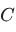
in the soft-margin SVM makes it behave less like the hard-margin SVM. - Unlike the hard-margin SVM, the soft-margin SVM can only be used with non- linear kernels.
Given a linearly separable dataset with margin
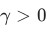
and radius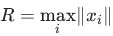
, which of the following statements about the perceptron algorithm are true?- At a misclassified point , a single application of the update rule is guaranteed to classify correctly immediately after that step.
- For any linearly separable data with margin , the perceptron always converges to one unique separating hyperplane, independent of the order in which misclassified points are presented.
- Let
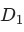
(points in , examples) and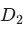
(points in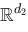
,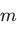
examples) be two linearly separable datasets with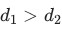
and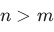
. The perceptron's worst-case mistake count is always larger for than for . - None of these.
Assume that for a certain linear regression problem involving features, the following weight vectors all produce an equal mean squared error:
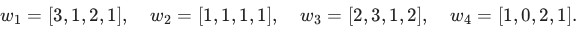
Which of the weight vectors is likely to be chosen by ridge regression?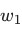
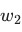
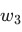
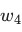
Consider the following dataset with two binary features  -nearest-neighbour, evaluated on this training set, achieves zero training error. Consider each point is its own nearest neighbour. Select the option that lists exactly the claims that are true.
-nearest-neighbour, evaluated on this training set, achieves zero training error. Consider each point is its own nearest neighbour. Select the option that lists exactly the claims that are true.
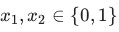
and binary label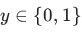
: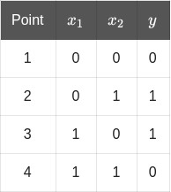
Consider the following three claims about this dataset: (i) Logistic regression (using the raw features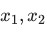
, with or without a bias term) can achieve zero training error. (ii) A decision tree of depth at most , using axis-aligned splits on , can achieve zero training error. (iii) -nearest-neighbour, evaluated on this training set, achieves zero training error. Consider each point is its own nearest neighbour. Select the option that lists exactly the claims that are true.- (i), (ii) and (iii)
- Only (ii) and (iii)
- Only (i) and (iii)
- Only (iii)
Suppose the dataset is initially linearly separable. Later, the data-generating process changes and the class boundary becomes highly nonlinear, for example:
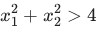
for one class and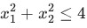
for the other. Without manually creating nonlinear features, which classifier among the three is most naturally capable of representing this type of decision boundary?- Perceptron
- Logistic Regression
- Decision Tree
- None of these
Suppose the true data-generating process is a polynomial of degree . You fit three models to the data: linear regression, polynomial regression of degree , and polynomial regression of degree . Which option correctly characterizes the bias and variance of each fitted model relative to the true model?
- Linear: low bias, low variance; degree- : low bias, high variance; degree- : high bias, high variance.
- Linear: high bias, high variance; degree- : low bias, low variance; degree- : high bias, low variance.
- Linear: low bias, high variance; degree- : high bias, low variance; degree- : low bias, high variance.
- Linear: high bias, low variance; degree- : low bias, low variance; degree- : low bias, high variance.
Consider logistic regression on one-dimensional data, with  if it cannot be determined.)
if it cannot be determined.)
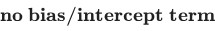
(the model is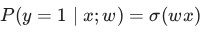
). The current weight is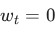
, the training set is a single example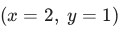
, and the step size is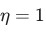
. Gradient ascent is performed directly on the log-likelihood of the data. Compute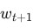
after one gradient-ascent step. (Round to decimal places; enter if it cannot be determined.)In logistic regression, a point is classified positive only if
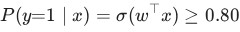
. What score threshold (with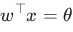
at the boundary of this rule) does this correspond to? (Round to decimal places.)You build a fully-connected feed-forward neural network. The input is a -dimensional vector; the network has two hidden layers of and neurons respectively, followed by an output layer of neurons. Every layer is densely connected to the next. if it cannot be determined.)
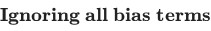
, compute the total number of weight parameters in the network. (Enter if it cannot be determined.)Consider one-dimensional linear regression with no bias term,
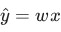
. The squared-error objective over the training set is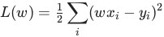
. The dataset is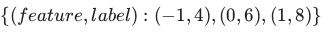
. Starting from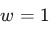
with learning rate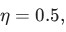
perform one gradient-descent step. What is the model's prediction at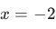
?Consider a soft-margin SVM in
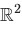
with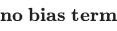
and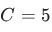
. Two of the training points strictly violate the margin constraint, these two points are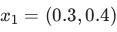
with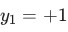
, and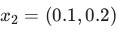
with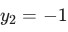
. All other points lie strictly beyond the margin. Compute the perpendicular distance between the margin hyperplanes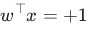
and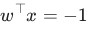
. (Round to decimal places.)A decision-tree node contains training examples: positive and negative. A candidate split divides them into two children: one child with positive and negative, the other with positive and negative. Using entropy (base- logarithms), compute the information gain of this split. (Round to decimal places.)
negative, the other with positive and negative. Using entropy (base- logarithms), compute the information gain of this split. (Round to decimal places.)For the covariance matrix
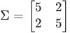
, compute the variance captured along the first principal component.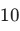
The figure below shows the training points of a soft-margin SVM in , together with its decision boundary if it cannot be determined from the figure.)
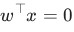
and its two margin hyperplanes and (dashed). Each point is marked with its true label, or . For how many points is it possible that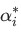
lie in the range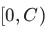
? (Enter if it cannot be determined from the figure.)
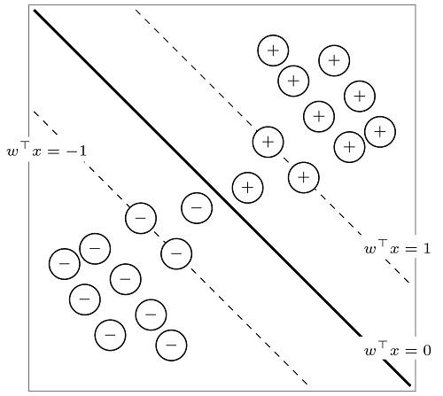
Consider a dataset with six datapoints , with labels and . A hard-margin linear SVM is trained on this dataset. Which ONE of the following sets is a possible set of support vectors?
Consider a binary classification problem in with positive examples and negative examples . Apply the feature map and a linear model . Which of the following weight vectors gives a maximum-margin decision surface separating the two classes?
In -nearest-neighbours, as the hyperparameter is increased from towards (the size of the training set), which of the following best describes the trend in the model's bias and variance?
towards (the size of the training set), which of the following best describes the trend in the model's bias and variance?- Bias increases, variance decreases.
- Bias decreases, variance increases.
- Both bias and variance increase.
- Both bias and variance decrease.
Suppose are i.i.d. samples from the uniform distribution with unknown parameter . Which of the following is the maximum-likelihood estimate of ?
Answer key
- Q1 (MCQ, 3 marks): A
- Q2 (MCQ, 3 marks): D
- Q3 (MCQ, 3 marks): B
- Q4 (MCQ, 3 marks): B
- Q5 (MCQ, 3 marks): C
- Q6 (MCQ, 3 marks): D
- Q7 (SA, 2 marks): 1
- Q8 (SA, 2 marks): 1.3858 to 1.3868
- Q9 (SA, 2 marks): 92
- Q10 (SA, 3 marks): -4
- Q11 (SA, 3 marks): 1.38 to 1.44
- Q12 (SA, 3 marks): 0.16 to 0.22
- Q13 (MCQ, 1 marks): C
- Q14 (MCQ, 4 marks): A
- Q15 (MCQ, 4 marks): A
- Q16 (MCQ, 4 marks): A
- Q17 (MCQ, 2 marks): A
- Q18 (MCQ, 2 marks): A